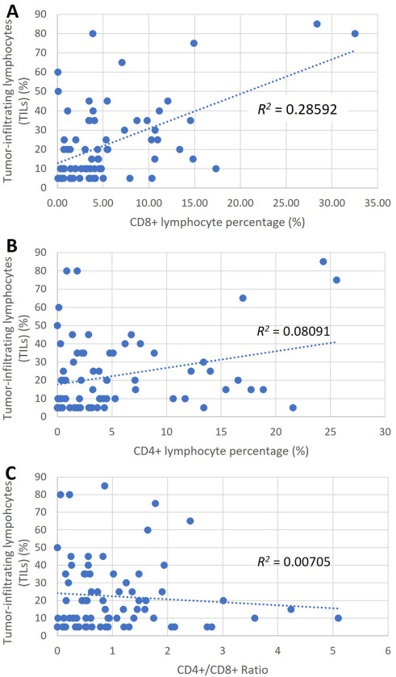

██████╗██╗██████╗ ██████╗
██╔════╝██║██╔══██╗██╔═══██╗
██║ ██║██████╔╝██║ ██║
██║ ██║██╔══██╗██║ ██║
╚██████╗██║██║ ██║╚██████╔╝
╚═════╝╚═╝╚═╝ ╚═╝ ╚═════╝
Ciro Zhang
Hi! I'm Ciro. I'm doing my S.M. in Data Science at Harvard, after finishing a B.S. in Data Science & Computer Engineering at UCSD. I mostly work on machine learning, especially computer vision: lately that's meant reconstructing badminton rallies in 3D and helping models reason over pathology slides. I've also spent a lot of time TAing, and every so often I build something just for fun, like a CPU from scratch or a little fish game.
Education 0x2000


Experience 0x3000

Research Intern
Electrical & Computer Engineering · UC San Diego (Advisor: Dr. Pengtao Xie)
Developed GeneChat, a multimodal LLM that generates interpretable gene explanations from DNA sequences. The model uses a hybrid DNABERT + Vicuna-13B architecture trained on 100k+ gene sequences on A100 GPUs, and was benchmarked against GPT-4o, LLaMA 3, and Gemini on gene function prediction tasks.

Research Intern
Scripps Institution of Oceanography · UC San Diego (Advisor: Dr. George Sugihara)
Developed EDM-CNN-LSTM, a hybrid model that conditions a neural forecaster on empirical dynamic modeling embeddings to predict bioluminescent algal blooms. Trained on 1,000+ weeks of San Diego ocean data, it improved mean PR-AUC from 0.171 to 0.552 over a standard LSTM.

Data Engineering Intern
BC Cancer Agency (Advisors: Dr. Chen Zhou & Dr. Gang Wang)
Worked on bioinformatics data pipelines, writing Groovy automation scripts inside Nextflow to preprocess cellular and gene expression datasets. Built Python tooling to detect and fix formatting issues across large experimental files, and used QuPath pipelines to extract quantitative features from cell imaging data.

Research Intern
Tea Labs · University of British Columbia (Advisor: Dr. Li Xiaoxiao)
Built CV pipelines for whole-slide imaging (WSI) pathology analysis using YOLO. Designed a multi-stage slide processing pipeline covering blur/edge filtering, patch extraction, and parallel GPU inference. Also developed semi-supervised dataset pipelines to scale model training despite limited expert annotations.

Research Intern
BiMBA · Peking University (Advisor: Dr. Ma Jingjing)
Built an automated pipeline to scrape and analyze trending keywords from Tencent platforms, studying factors that drive online charitable donations. Integrated LLM APIs to generate structured trend reports and automatically publish findings to Feishu Sheets.
Research Volunteer
BC Cancer Agency (Advisors: Dr. Chen Zhou & Dr. Gang Wang)
Ran QuPath image-analysis pipelines on digitized tissue microarrays from 72 triple-negative breast cancer cases, turning pathologist annotations into cell-level measurements of CD8+ and CD4+ lymphocyte infiltration.
Publications 0x4000
Birdseye: 3D Badminton Analysis from Monocular Video
Zhang C
End-to-end CV system that reconstructs full badminton rallies in 3D from a single camera. Court calibration seeds RANSAC with VGGT focal-length estimates, players are lifted to 3D SMPL meshes with ray-cast ground correction, and a transformer over 3D skeleton motion detects hits and classifies 12 shot types.
SlideBank: A Persistent Hierarchical Evidence Bank for Consistent Whole-Slide Reasoning
Zhao B, Huang G, Zhang C, Li A, Tan Y, Zhou C, Wang G, Gao Z, Li X
Training-free framework that turns each gigapixel pathology slide into a persistent, concept-indexed evidence bank grounded to patch coordinates. Questions are routed to relevant evidence and resolved by multi-scale consensus, so vision-language models answer consistently and banks are reused across queries to cut inference cost.
UltraVR: A Diagnostic Ultra-Resolution Image–VQA Benchmark for Evidence-Grounded Reasoning
Huang G, Yang Y, Kang M, Zhao B, Zhou J, Zhang C, Zhou C, Wang G, Gao Z, Li X
Benchmark for evidence-grounded reasoning over ultra-resolution images across CCTV surveillance, remote sensing, pathology whole-slide images, and industrial anomaly detection. Every question comes with a step-level ground-truth reasoning chain, so it shows where vision-language models fail, not just whether they do. Frontier models struggle most with locating and perceiving the right evidence.
Predicting Bioluminescent Algal Blooms by Conditioning Neural Forecasts on Reconstructed Dynamics
Paraselli A, Zhang C, Carter ML, Sugihara G
Conditions a CNN–LSTM on state-space embeddings from Empirical Dynamic Modeling to forecast bioluminescent red tides along the Southern California coast, improving mean PR-AUC from 0.171 to 0.552 over a standard LSTM.
Histological subtype is associated with PD-L1 expression and CD8+ T-cell infiltrates in triple-negative breast carcinoma
Annals of Diagnostic Pathology · Salisbury T, Abozina A, Zhang C, Mao E, Banyi N, Leo J, Ionescu D, Zhou C, Wang G
Investigated the relationship between tumor histological subtypes and immune markers (PD-L1 expression, CD8+ T-cell infiltration) across 72 triple-negative breast carcinoma cases, identifying subtype-specific patterns with implications for immunotherapy response prediction.

Team Projects 0x5000
DSC10 Practice Platform
Python • Pandoc • BeautifulSoup • Educational ToolPractice problem platform for UCSD's DSC 10 course hosting past exams and discussion materials. Built LaTeX-to-Markdown conversion tools and standardized problem formatting system.

HAB Forecasting: Harmful Algal Bloom Prediction (WIP)
Python • EDM–LSTM • Time-Series Forecasting • Oceanographic DataDeveloped and deployed a web platform with the HKN project team for forecasting bioluminescent harmful algal blooms (HABs) at UCSD Scripps, integrating our EDM–LSTM model with real-time coastal monitoring data.
Personal Projects 0x6000
Paper Reader: Document AI Pipeline
Python • YOLO • PyMuPDF • BERTBuilt a pipeline to convert research PDFs into structured Markdown/JSON datasets. Applied DocLayNet (YOLO) for layout detection and PyMuPDF for text/figure extraction. Reduced noise using regex + BERT-based filtering.
TinyRISC-9: Custom 9-bit ISA CPU
SystemVerilog • Python • AssemblyBuilt a fully custom CPU from scratch in SystemVerilog — 9-bit ISA, 8-bit data path, 8 registers, 14 opcodes. Designed the entire architecture under tight constraints, then wrote assembly programs that pushed its limits: a Hamming distance analyzer, an arithmetic range finder, and a 32-bit signed multiplier packed into dual 8-bit registers.
Gmail Replier: LLM Auto-Reply Bot
Python • OpenAI API • Gmail API • OAuthPython service that scans Gmail and drafts replies with OpenAI or Ollama, supporting dry-run and safe-prompt modes. Integrated Gmail API with OAuth, custom labels, and robust error-handling with exponential backoff.
Wiki-Graph-Explorer: Wikipedia BFS Game
Svelte • D3.js • Graph AlgorithmsInteractive web app that visualizes paths between Wikipedia articles using BFS graph traversal. Built with Svelte and D3 for dynamic graph visualization. Includes data processing pipeline with Jupyter notebooks for Wikipedia article parsing.
Fish Game: HTML5 Jumping Game
JavaScript • HTML5 CanvasBrowser-based jumping game built with vanilla JavaScript and HTML5 Canvas. Features custom physics engine, camera system, and procedurally generated environments. Deployed on GitHub Pages for instant play.
Slice: Android Bill Splitting App
Java • Android • GradleAndroid app for splitting bills among groups. Built with Java using Android Studio with 120+ commits. Features user-friendly interface for tracking expenses and calculating individual shares.
OneTouch: Android Shortcut Widget
Java • Android • WidgetsAndroid widget app providing quick shortcuts and one-tap actions. Built with Java for Android, featuring customizable widgets for improved productivity and quick access to frequently used functions.